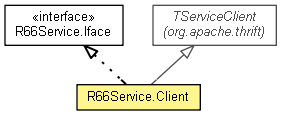

org.waarp.thrift.r66
Class R66Service.Client
java.lang.Object
 org.apache.thrift.TServiceClient
org.waarp.thrift.r66.R66Service.Client
org.apache.thrift.TServiceClient
org.waarp.thrift.r66.R66Service.Client
- All Implemented Interfaces:
- R66Service.Iface
- Enclosing class:
- R66Service
public static class R66Service.Client
- extends org.apache.thrift.TServiceClient
- implements R66Service.Iface

| Fields inherited from class org.apache.thrift.TServiceClient |
iprot_, oprot_, seqid_ |
|
Constructor Summary |
R66Service.Client(org.apache.thrift.protocol.TProtocol prot)
|
R66Service.Client(org.apache.thrift.protocol.TProtocol iprot,
org.apache.thrift.protocol.TProtocol oprot)
|
|
Method Summary |
List<String> |
infoListQuery(R66Request request)
The request should contain: -to, -rule, one of (-exist, -detail, -list, -mlsx) and optionally -file |
R66Result |
infoTransferQuery(R66Request request)
The request should contain: -tid, (-to and/or -from), and one of (-cancel, -stop, -restart, -exist) |
boolean |
isStillRunning(String fromuid,
String touid,
long tid)
All parameters must be set. |
List<String> |
recv_infoListQuery()
|
R66Result |
recv_infoTransferQuery()
|
boolean |
recv_isStillRunning()
|
R66Result |
recv_transferRequestQuery()
|
void |
send_infoListQuery(R66Request request)
|
void |
send_infoTransferQuery(R66Request request)
|
void |
send_isStillRunning(String fromuid,
String touid,
long tid)
|
void |
send_transferRequestQuery(R66Request request)
|
R66Result |
transferRequestQuery(R66Request request)
The request should contain: -to, -file, -rule, optionally -info, -md5, -block, -nolog, -start, -delay |
| Methods inherited from class org.apache.thrift.TServiceClient |
getInputProtocol, getOutputProtocol, receiveBase, sendBase |
| Methods inherited from class java.lang.Object |
clone, equals, finalize, getClass, hashCode, notify, notifyAll, toString, wait, wait, wait |
R66Service.Client
public R66Service.Client(org.apache.thrift.protocol.TProtocol prot)
R66Service.Client
public R66Service.Client(org.apache.thrift.protocol.TProtocol iprot,
org.apache.thrift.protocol.TProtocol oprot)
transferRequestQuery
public R66Result transferRequestQuery(R66Request request)
throws org.apache.thrift.TException
- Description copied from interface:
R66Service.Iface
- The request should contain: -to, -file, -rule, optionally -info, -md5, -block, -nolog, -start, -delay
- Specified by:
transferRequestQuery in interface R66Service.Iface
- Returns:
- the result of the operation
- Throws:
org.apache.thrift.TException
send_transferRequestQuery
public void send_transferRequestQuery(R66Request request)
throws org.apache.thrift.TException
- Throws:
org.apache.thrift.TException
recv_transferRequestQuery
public R66Result recv_transferRequestQuery()
throws org.apache.thrift.TException
- Throws:
org.apache.thrift.TException
infoTransferQuery
public R66Result infoTransferQuery(R66Request request)
throws org.apache.thrift.TException
- Description copied from interface:
R66Service.Iface
- The request should contain: -tid, (-to and/or -from), and one of (-cancel, -stop, -restart, -exist)
- Specified by:
infoTransferQuery in interface R66Service.Iface
- Returns:
- the result of the operation
- Throws:
org.apache.thrift.TException
send_infoTransferQuery
public void send_infoTransferQuery(R66Request request)
throws org.apache.thrift.TException
- Throws:
org.apache.thrift.TException
recv_infoTransferQuery
public R66Result recv_infoTransferQuery()
throws org.apache.thrift.TException
- Throws:
org.apache.thrift.TException
isStillRunning
public boolean isStillRunning(String fromuid,
String touid,
long tid)
throws org.apache.thrift.TException
- Description copied from interface:
R66Service.Iface
- All parameters must be set. One of fromuid and touid should be local host UID, the other being
the remote host UID.
- Specified by:
isStillRunning in interface R66Service.Iface
- Parameters:
fromuid - UID of requestertouid - UID of the requestedtid - the ID of Transfer
- Returns:
- True if still running, else False
- Throws:
org.apache.thrift.TException
send_isStillRunning
public void send_isStillRunning(String fromuid,
String touid,
long tid)
throws org.apache.thrift.TException
- Throws:
org.apache.thrift.TException
recv_isStillRunning
public boolean recv_isStillRunning()
throws org.apache.thrift.TException
- Throws:
org.apache.thrift.TException
infoListQuery
public List<String> infoListQuery(R66Request request)
throws org.apache.thrift.TException
- Description copied from interface:
R66Service.Iface
- The request should contain: -to, -rule, one of (-exist, -detail, -list, -mlsx) and optionally -file
- Specified by:
infoListQuery in interface R66Service.Iface
- Returns:
- The list of String as output from Query
- Throws:
org.apache.thrift.TException
send_infoListQuery
public void send_infoListQuery(R66Request request)
throws org.apache.thrift.TException
- Throws:
org.apache.thrift.TException
recv_infoListQuery
public List<String> recv_infoListQuery()
throws org.apache.thrift.TException
- Throws:
org.apache.thrift.TException
Copyright © 2012 Waarp. All Rights Reserved.